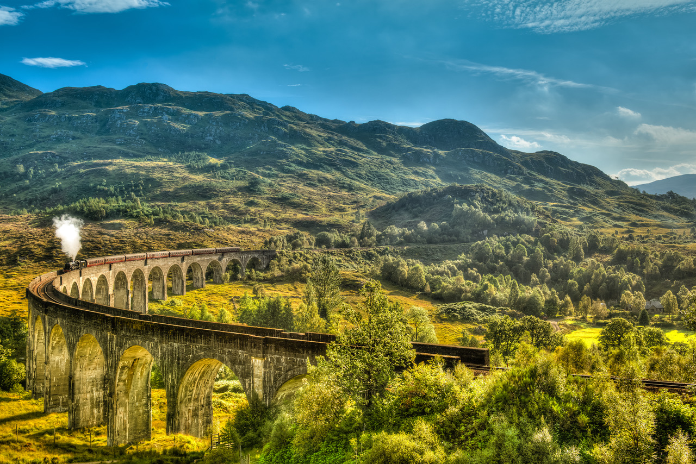
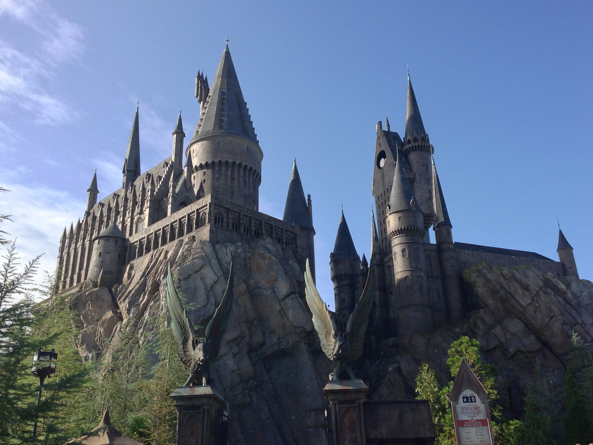

Locations To Visit
1. Loch Eilt
Loch Eilt is a fresh water loch, or lake, located in the West Highlands of Scotland. It is seen as the final resting place of Dumbledor, specifically using a small isand in the loch called Eilean na Moine, in Harry Potter and the Half-Blood Prince.

2. The Australia House
The Australia House, or The High Commission of Australia in London, is the diplomatic mission of Australia in the United Kingdom. It is used as the interior of Gringotts Wizarding Bank first seen in Harry Potter and the Philosophers Stone.

3. The Jacobite Steam Train
The Jacobite Steam Train train is used as the Hogwarts Express in the Harry Potter films. Operating since 1984 it runs from Fort William and Mallaig, Scotland. It can be seen in all eight films of the Harry Potter franchise.
4. Kings Cross Station
Kings Cross Station is located on the outskirts of Central London. It is seen first in Harry Potter and the Philosophers Stone, most know for by fans as the location of Platform 93⁄4.

5. Claremont Square
Claremont Square, located in London, England. Is the home of Sirius Black known in the films/books as Grimmauld Place. In series 12 Grimmauld Place is a safehouse for the Order of the Pheonix, lead by Harry's headmaster, Dumbledor.

6. Leadenhall Market
Leadenhall Market is known in the series as Diagon Ally. It is located on Gracechurch Street in London, England. It is used as the exterior shots for Diagon Ally seen throughout the films. It is the first place Harry visits in the "Wizarding World", taken there by Hagrid to collect his school supplies for Hogwarts.

7. Ashridge Wood
Ashridge Wood is seen in Harry Potter and the Goblet of Fire as the location for the Quidditch World Cup. It is a beautiful wooded area where lots of flowers grow, making it well known for its beauty.

8. Studio Attractions!
If leading your own adventure seems like a bit too much to start with, then a studio attraction is the perfect place for you to start!
Universal Studios
Universal Studios has Harry Potter World at the Islands of Adventure, Florida, Japan, and Hollywood locations. Universal Studios Beijing is currently under construction with plans to open in the year 2021.
Warner Bros. Studio Tour - London
You can visit the Warner Brothers Harry Potter Studio Tour to see sets and behind the scenes of filming the franchise.